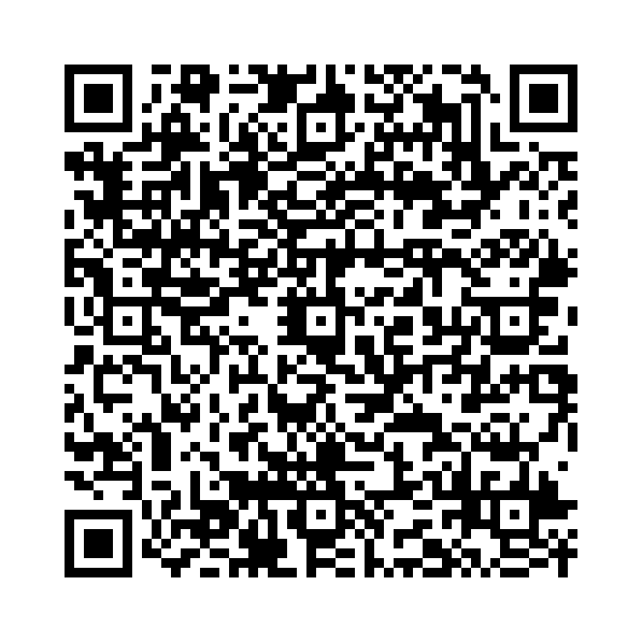

受動態は「～される」「～された」という意味を表します。以下の形があります：
以下の単語を並び替えて正しい文を作成しましょう。（和訳を参考にしてください）

問題1: (has / been / completed / project / the) - そのプロジェクトは完了しました。
解答: The project has been completed。
解説: 現在完了受動態では、has/have been + 過去分詞を使用します。
問題2: (had / report / been / the / submitted / by / him) - その報告書は彼によって提出されていました。
解答: The report had been submitted by him。
解説: 過去完了受動態では、had been + 過去分詞を使用します。
問題3: (this / be / will / cleaned / room) - この部屋は掃除されるでしょう。
解答: This room will be cleaned。
解説: 未来形の受動態では、will be + 過去分詞を使用します。
問題4: (already / been / fixed / has / problem / the/ ?) - その問題はすでに解決されましたか？
解答: Has the problem been fixed already?
解説: 疑問文では、助動詞 + 主語 + been + 過去分詞の語順を使用します。
問題5: (not / documents / been / have / the / signed) - その書類はまだ署名されていません。
解答: The documents have not been signed。
解説: 否定文では、助動詞 + not + been + 過去分詞を使用します。